РР 1.5-1.6 2008г.
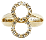 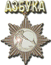 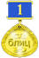 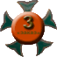 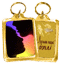")
") 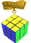
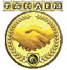
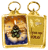
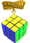
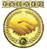
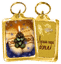
 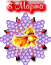
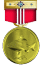
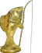
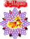
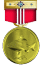
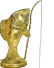
РР 2.0 2009-2010г.
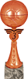 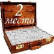 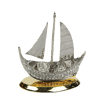 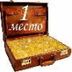 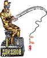") 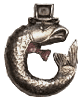
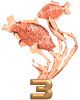
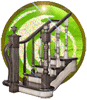
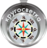
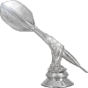
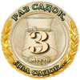
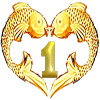
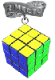
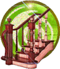
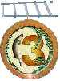
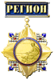
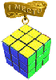
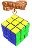
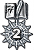
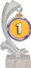
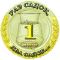
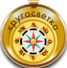
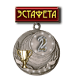
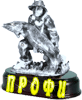
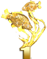
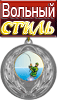
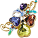
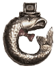
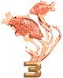
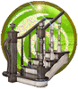
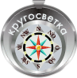
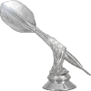
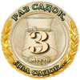
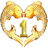
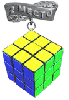
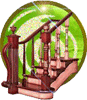
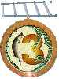
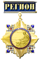
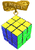
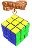
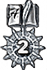
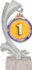
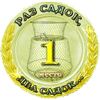
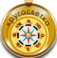
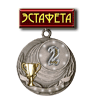
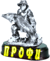
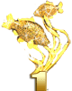
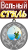
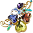

РР 3.0 2010-2011г.
") 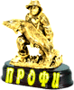
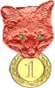
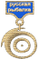
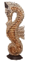
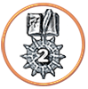
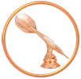
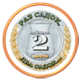
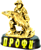
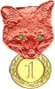
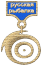
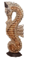
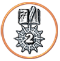
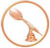
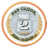
 Остаться в живых - II место") 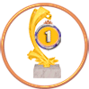
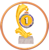
 КУБИК РУБИКА - II место") 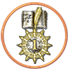
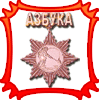
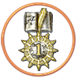
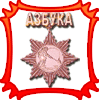
 Близнецы - II место") 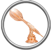
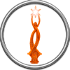
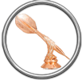
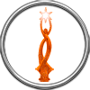
 АЗБУКА - I место")
 Охота на лис - II место")
РР 3.0-3.7 2011-2013г.
 ПРЕФЕРАНС - III место")
 ПОКЕР - I место")

 Дартс - III место")
 Пирамида - I место")


 Азбука - III место")

 .
.